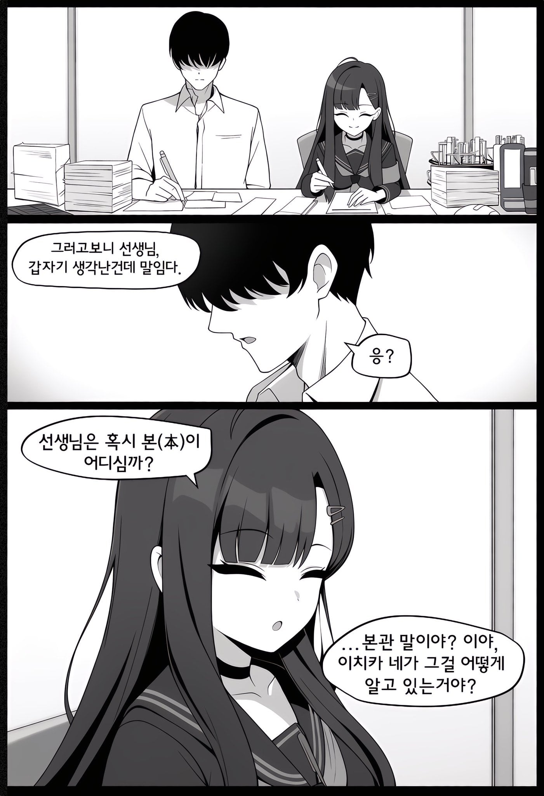
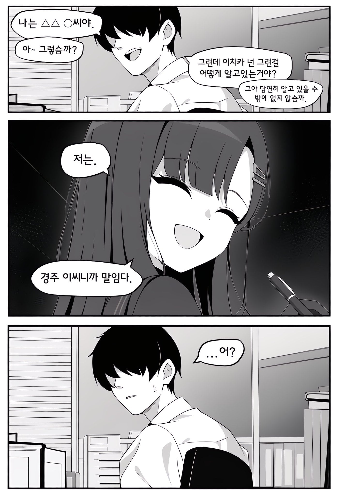
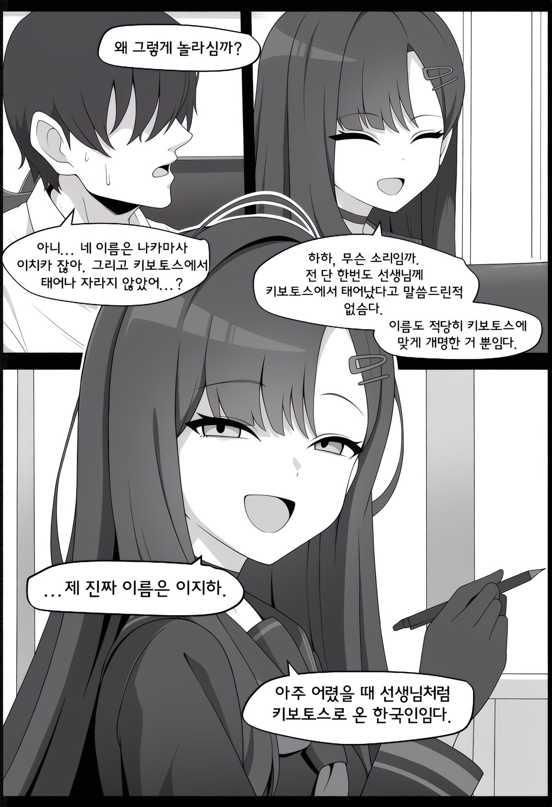
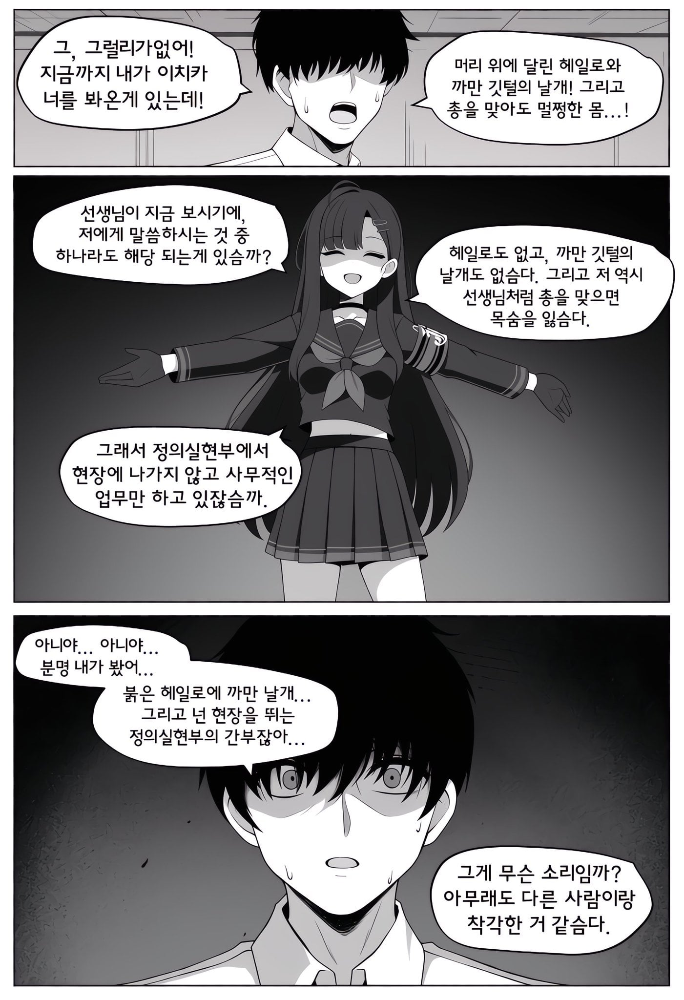
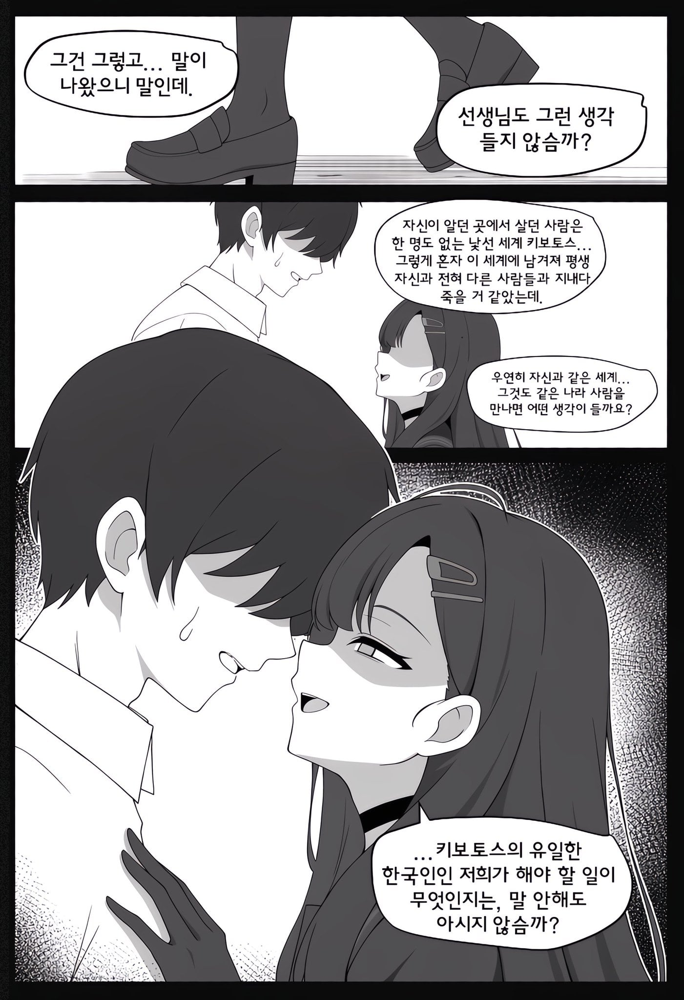
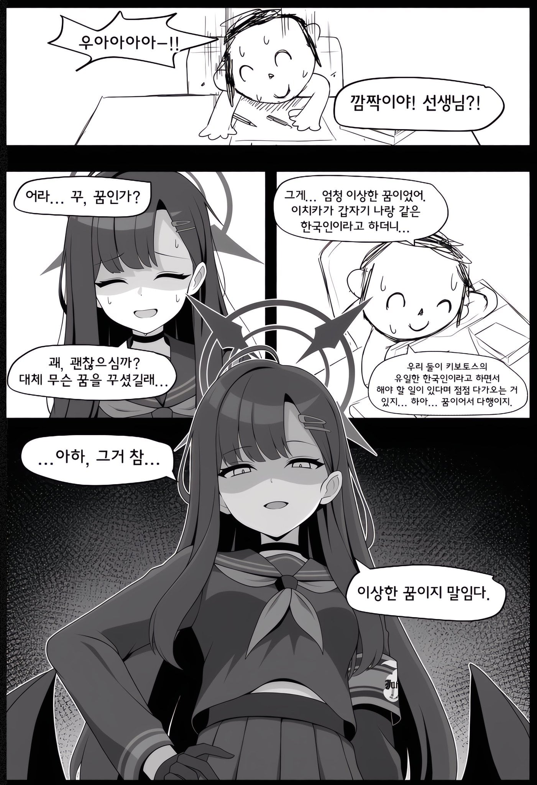

수육... 수육도 필요해...
씨바 이 생각했는데 ㅋㅋㅋ
ㅋㅋㅋㅋㅋ
김장에 알맞은 배추를 사오도록 선생
같이...절여보자고...
오늘밤은 안재울꺼예요
배추 절인거 뒤집어야죠
허리가 터져 죽습니다
술김에 하는말이지만
내가 블루아카이브에 빠져들게된 계기가 바로 저 이치카임
긴생머리에 그렇게 막 매력적이지 않고 평범했던 그런느낌
하 씨발 날이 좀 서늘할떄마다 이지랄이네 ㅋㅋㅋ
2007년 내가 고등학교떄 일산에있던 학원에서 만났던 여자애였는데
기억은 잘안났지만 학원버스에서 짜요짜요 타이쿤? 그 폰게임 하다가
그여자애가 말걸고 나서 부터 좀 친해졌었음
그러다가 언제부터인가 학원버스 안타고 그여자애 집까지 걸어가면서 이야기 하면서 갔었음
그냥 친구같은 느낌이였지 여자라는 느낌이 잘없었는데
언제 그여자애가 사귀자고 살짝 문자 보냈었다가
내가 당황해서 거절했었음 그때부터 말걸어도 대답안하고 혼자집에가고 그랬었는데
지금 돌이켜생각하면 그여자애한테 얼마나 상처입혔을지 생각하게됨
아직도 그 특유의 샴푸냄새 그 눈웃음 표정 아직도 기억에 생생함
술드셨군요 아조시 지금은 결혼하셨나요
업보네
술냄시
지금쯤 댓글 싸놓은거 보고 이불차겠다
이 내용 한 열번은 썻을껄
그런 달콤한 추억이 있다니 부럽군
일단...김장하고...간장도 만들자...
???:이 새끼들이 좀 잘해주니깐 머리 꼭대기에서 캠프파이어 하고 그러심까 제가 다정스럽고 사랑스럽슴까 씨발것아?
한국인끼리 있다면 해야할건 당연히...
장담그고 김치만들어야지!
하는김에 수육도 같이!
김치마려웠는데 잘되었다.

김치 왜 안 만듦?
그건 바로 김장이지!